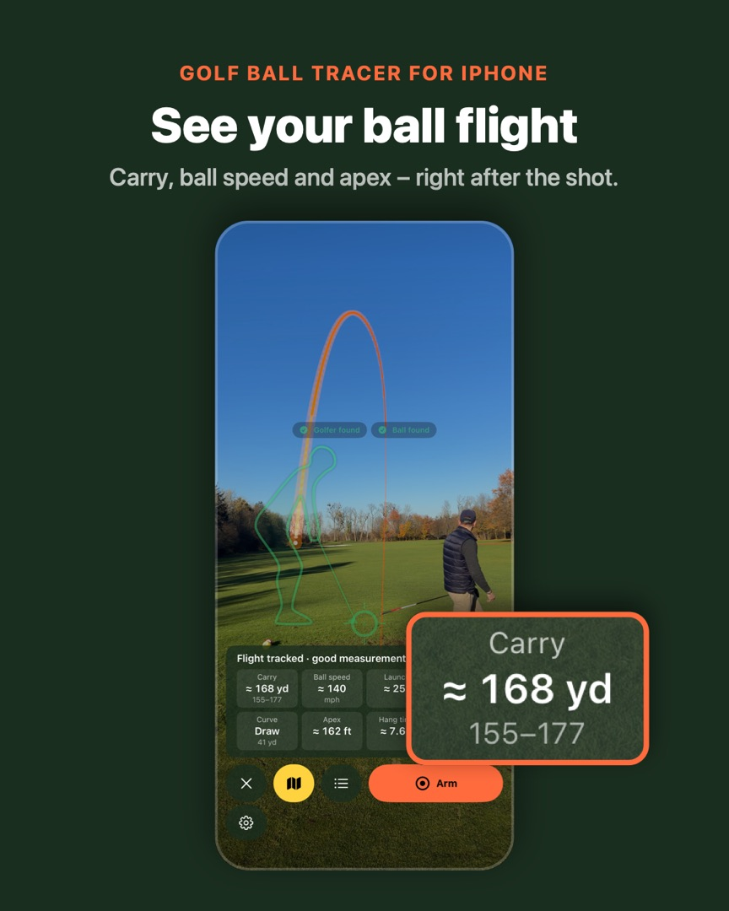
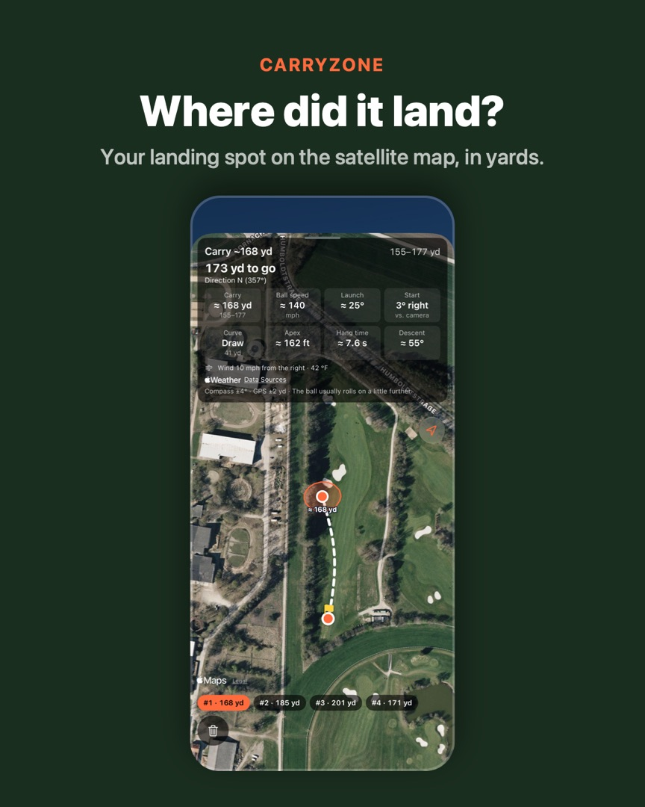

carryzone.
See where your ball landed.
Carryzone traces your golf ball live with your iPhone camera – at the range or on the course. Film from behind the ball, hit, and watch the flight appear.
10 shots free · then $1.99/month


What you get
- Your ball flight drawn into the camera view, right after the shot
- Carry in yards, ball speed, launch, apex and curve – each with an honest range
- The landing zone on the satellite map
- Every shot saved as a video with the tracer, in four looks